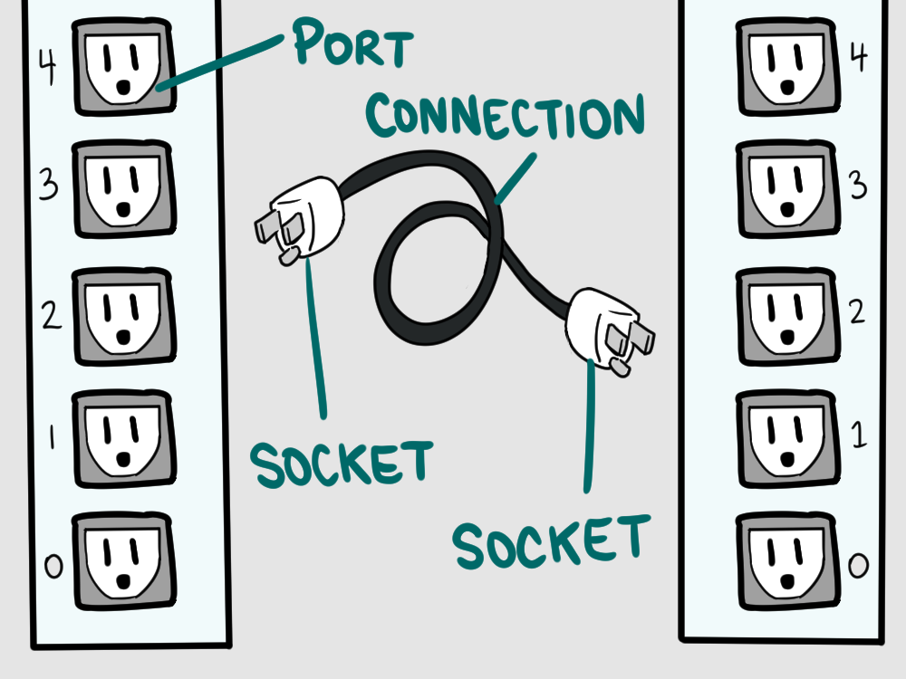
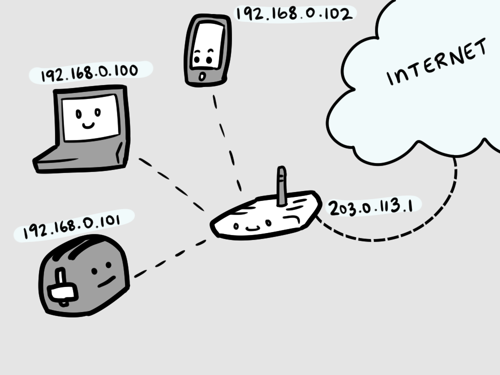
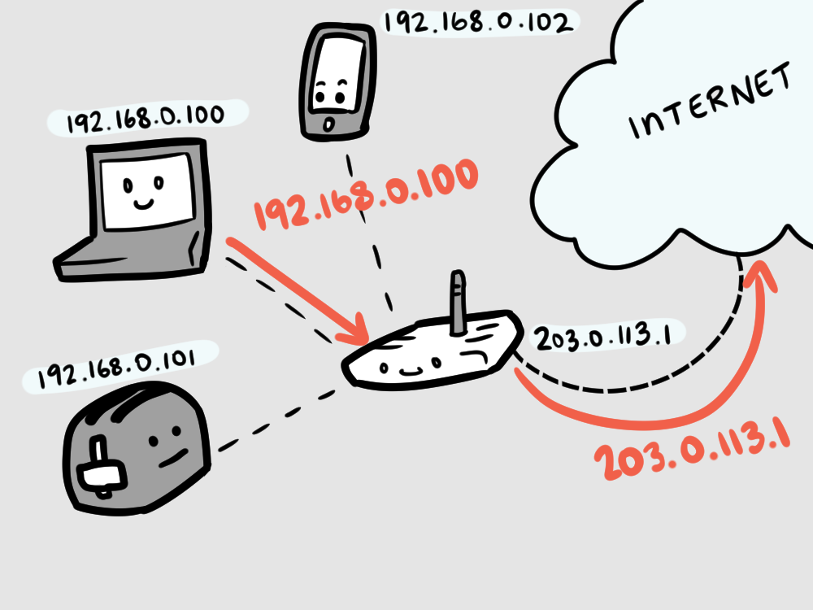
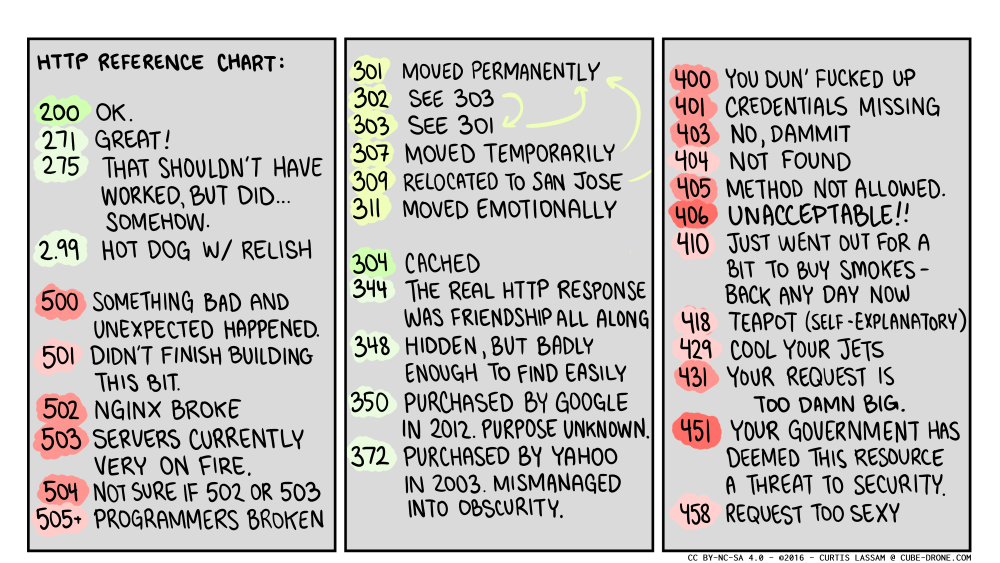
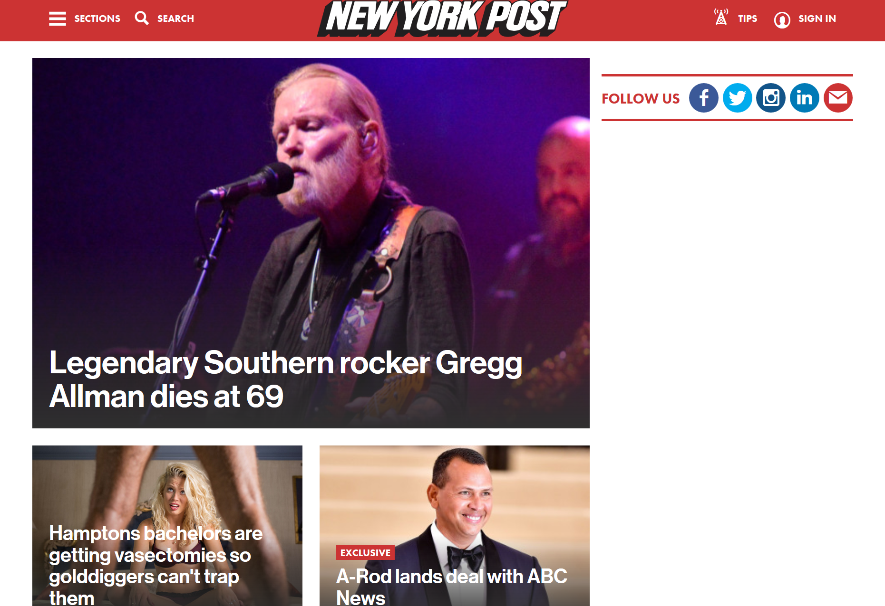
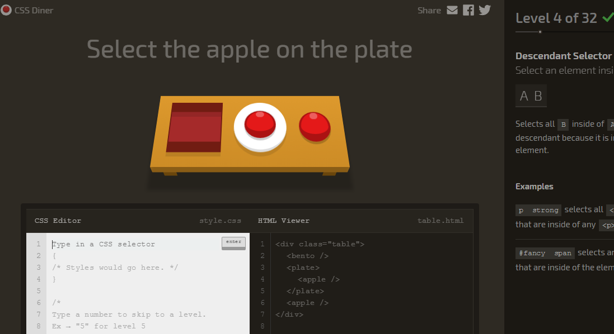

Build A The Web
Introduction
This is Build A The Web, a book devoted to taking us, people with basic programming and computer knowledge, and upgrading us into web programmers.
Halp
I'm starting this book assuming that we already know how to program a little bit!
To learn to program, I recommend this other open textbook: How To Think Like a Computer Scientist.
The best kind of textbook about the web is made out of HTML and filled with media and links to other content. That is what the web is all about, not dusty ol' textbooks that are no longer valid because they cover a version of the web that went obsolete nine years ago.
This book was last updated June 21, 2017. If that's a long time ago, I might have died. Avenge me!
This book is available for free, under the terms of the GNU Affero General Public License v3.0 , except for the fonts, which are available under the Open Font License.
GPLv3
While Richard Stallman may appear to be a bit of a dogmatic screwball, the man's seemingly able to predict the future.
This site, and all of the resources used to generate this site, including class materials and examples, are available at https://github.com/classam/buildatheweb. That's also a good place to comment, suggest updates, file bugs, and generally improve the book if you feel that it needs some attention.
There are a few images included for comedic effect, here, that I do not own, and thus cannot make available under the same license as the rest of the work.
The copyright implications of "a screenshot of someone else's work" are still pretty legally fuzzy.
The copyright implications of "a screenshot from an episode of The Simpsons" are even more so.
New Phone, Who Dis?
My name is Curtis Lassam.
I like to make sometimes humorous, sometimes educational content, almost always on the topic of programming.
I'm a web developer, a Vancouver native, and a cartoonist.
Sometimes, I make videos, or do conference talks.
Chapter 1: Request, Response
Our first chapter is going to focus on what happens behind the scenes when we make a web request. What that means is a crash course in computer networking.
Crash Course
For a crash course in everything else in Computer Science, there's always Crash Course Computer Science.
They tell you that they are not going to help you change the CSS on your Grandma's sewing blog so visitor's cursors turn into kittens, though, so there's still a job for me to do, here.
Uniform Resource Locators
Let's start by looking at what happens when we crack open a web browser and type in:
https://en.wikipedia.org/w/index.php?title=Blinkenlights&action=edit#Etymology
This is a URL, which stands for Uniform Resource Locator.
URI
Some people might also call this an URI, but if we encounter a person who does this, I recommend that we shun then socially until they stop.
This URL uniquely identifies a document somewhere on someone else's computer that we are going to request from that computer.
Abbreviations
If you hold your mouse over an abbreviation like URL for a few seconds, the definition of that term should pop up.
This divides into protocol, domain name, path, parameters, fragment, locus, and spindle. Memorize all of these terms now.
Dissecting a URL
Protocol
https://en.wikipedia.org/w/index.php?title=Blinkenlights&action=edit#Etymology
The protocol describes how to connect.
Domain Name
https://en.wikipedia.org/w/index.php?title=Blinkenlights&action=edit#Etymology
The domain name describes where to connect to.
Path
https://en.wikipedia.org/w/index.php?title=Blinkenlights&action=edit#Etymology
The path describes what is being requested.
Parameters
https://en.wikipedia.org/w/index.php?title=Blinkenlights&action=edit#Etymology
The parameters describes extra arguments for the thing being requested.
Fragment
https://en.wikipedia.org/w/index.php?title=Blinkenlights&action=edit#Etymology
The fragment describe a specific part of the document that we want to look at.
Locus & Spindle
the locus and spindle were in your heart the entire time
This is just a bunch of words, describing where we think our document is. How do we actually get that document?
Transport Control Protocol / Internet Protocol
Communicating with a far away computer is a process fraught with interesting problems. Problems like:
- How do we make sure that messages reliably arrive?
- How do we make sure that messages arrive in the right order?
- How does our computer communicate with our router?
- How does our router communicate with our modem?
- How do we get messages to travel across a thin strip of copper, or fiberoptic cable, at all?
Most of these problems are quite complicated — and the lower level we get, the more likely it is that we'll need to consult an electrical engineer to explain signal processing theory to us. Believe me, that is the last thing that we want.
Fortunately, smart people have already solved most of these problems for us. The solutions to these problems stack up on top of another — at the bottom, electrical engineers figuring out how to send messages across wires, at the top, math PhDs figuring out how to make sure that messages arrive reliably in a fixed order.
We have two protocols at the very top of the stack that define how we communicate between computers — IP, the Internet Protocol, which defines how we send messages across the network, and TCP, the Transport Control Protocol, which makes sure that our messsages completely arrive, in the right order, and uncorrupted.
Protocol & Stack
I'm going to say the word protocol a lot, and it's probably important that I establish what that means. In Computing Science, we learn the difference between an algorithm and a program — an algorithm describes a specific way of solving a problem, whereas a program is the actual code that we need to run the algorithm. We could have five different programs, all implementing the same algorithm.
A protocol is an algorithm for communication. It delineates the rules of communication.
C–3P0 was a protocol droid, because he was programmed with all of the rules for communicating with the various different cultures in the Galaxy Far Far Away.
Canonically, C-3P0 was also not very good at this.
In the same way that a program is an implementation of an algorithm, a stack is an implementation of a protocol. A protocol is an algorithm, and a stack is a program to implement a protocol. So, in order to run TCP/IP, our computer runs the TCP/IP stack, which implements the TCP/IP protocol.
It has come to my attention that computer people use the word "stack" too often.
I keep trying to advance "pile" as an alternative, but it's not taking off.
IP Address & Sockets
The abstraction presented by TCP/IP
is simple: every computer has an IP address.
An IP address looks like this: 192.0.2.0 — or, like this:
2001:DB80:c501:17ef:a063:a37f:3803:5c1a. These are just
identifiers that communicate a unique identity for the computer in question.
If we know our IP address, and the IP address of the computer that we want to communicate with, and that other computer is online, we can trust that IP will get the message to that computer. We can use TCP to open a socket to a specific port on our target computer.
Giant Walls of Plugs
Imagine these computers like giant walls of plugs — or ports — and when we open a connection, TCP creates a two way communication link between two ports with a socket on each end.
There are thousands of these ports — they're numbered from 1 to 65,535. In order to keep things tidy, each different protocol that runs on top of TCP usually runs on a different port. Of course, most computers aren't communicating on all of these ports at once — in fact, there are six ports that, on most computers, get more use than all of the rest of them combined:
- 25, for the Simple Mail Transfer Protocol (SMTP)
- 53, for the Domain Name System (DNS)
- 67 and 68 for the Dynamic Host Configuration Protocol (DHCP)
- 80 for the HyperText Transfer Protocol (HTTP)
- 443, for the HyperText Transfer Protocol over Transport Layer Security (HTTPS)
We're going to cover all of these protocols in detail at one point or another.
For every port that we could contact on a remote computer, there's a program on the remote computer that's running, listening, and potentially responding to our requests.
Server vs. Client
A computer that stays connected to the internet all of the time and responds to these requests is called a server, and server programming is half of the battle of web programming. The second half is client programming, which describes the parts of the transaction that occur on the customer's side of things.
The third half of the battle is lasers.
DHCP
In order to communicate with a remote server, then, we need three things — our IP address, their IP address, and a port number, to communicate with.
First of all, let's talk about how we got our IP Address.
Well, the short answer is, our computer already knows its IP address. We just ask.
How did our computer get its IP address? Well, when we connected it to the router — either via WiFi or by plugging it in — it communicated to the router, using DHCP, the Dynamic Host Configuration Protocol, where our computer asked the router to assign it an IP Address.
Then, how did the router that gave us an IP address get its own IP address? Well, when we connected the router to the internet, either by plugging it in to a modem or by plugging it in to another link in the network, it also communicated to a router, and communicated using DHCP. It asked "What is my IP?".
How did that router get its IP? Magic. It was magic.
Network Address Translation
If we ask our computer to tell us its
IP address, it'll probably report something
that starts with 10.0 or 192.168 — but, if we go to
Google and ask "what is my IP?",
it'll tell us a completely different
IP address.
What gives? How can our computer have more than one IP address?
As part of our deal with our ISPs, we usually get just one IP address. Just the one. Presumably, we have more than one device in our home — a computer, a cel phone, a laptop, a second computer, a smart TV, a toaster that connects to the internet for some reason, a third computer, a toothbrush that connects to the internet for some reason, things have really gone out of control lately.
All of these devices need to share the one IP address, so, our router creates a little private
network, just for us, in our home. In this private network, any computer can have any
IP address
that it wants. By convention, the IP
addresses for use in private networks start with 192.168
or 10.0. Then, when we're connecting to the outside world, our router translates
our IP address in the private network into our public
IP address.
This is NAT, Network Address Translation.
The router creates a private network for all of our devices and assigns them local IP addresses.
When our devices make requests to the internet, the router translates them into the public-facing IP address.
When the internet responds, the router remembers who requested the content and forwards the response back to that IP address.

Domain Name System
In order to communicate with a server, we need both our own IP address and the IP address of the computer that we want to communicate with.
We have our own IP address — now we need to find the address of the server that we want to talk to.
Let's look at the link we're trying to access.
https://en.wikipedia.org/w/index.php?title=Blinkenlights&action=edit#Etymology
There's no IP address anywhere in this link. There is a domain name,
en.wikipedia.org
In order to find the IP address for this server, we're going to have to start by consulting a DNS server. DNS stands for Domain Name System, and the process of converting a domain name into an IP address is called name resolution.
How do we know where the DNS server is? When we use DHCP to connect to WiFi, it also provides us with the IP address of the nearest DNS server, which is usually being maintained by our ISP. Acronyms!
Turkish Protesters

Google also maintains a public
DNS
server at the address 8.8.8.8, which is good to know
in case our local
DNS server ever goes down or is
interfered with by a totalitarian government.
So our computer sends a request to the
DNS server,
asking where to find en.wikipedia.org.
If the server already knows where en.wikipedia.org is, then it responds with the
IP address. Let's imagine, though, that the server doesn't know.
howdns.works

The best way to understand DNS is to visit howdns.works, where they illustrate the protocol with fun cartoons.
DNS Root servers are distributed all over the globe, and they keep track of exactly one thing: the IP addresses of the computers reponsible for the recordkeeping of top level domains, like
.com.net.org.photo.click.ninja.unicorn.fun.ooo.plumbing.oh my god top level domains are just getting dumber and dumber
So, the DNS server looks at the domain name we've given it —
en.wikipedia.org —
sends a request to the root server, and asks
"which servers can I ask about .org records?"
The root server will reply with a list of IP addresses responsible for .org records. These are the addresses of Top Level Domain Servers, which are maintained by Domain Registrars. We can pay these people about ten US dollars a year to create and maintain a record for us, so long as nobody else has claimed that domain name already. For a pittance, I now own http://butts.work.
Some people claim that the most important tool in web programming is a command line or a text editor, but I will maintain that it is a credit card.
Finally, the DNS server queries the wikipedia nameservers, asking them
where they can find en.
If we paid a registrar to put up a domain name for us,
they'll usually throw in a nameserver for free —
all we have to do is write some DNS
rules that tell the nameserver what
IP address we want to point at.
DNS rules are written in a cryptic language that contains records
with names like A, MX, AAAA,
and AAAAAAAAAAAAAAAAHH SPIDERS —
I'm sorry, there was a spider next to the keyboard.
So, Wikipedia's nameservers report that en.wikipedia.org is
located at, say, 203.0.113.98.
Finally, after that entire protracted process, we know where wikipedia is.
Because I wrote this in the past, that's bound to change and has definitely changed already.
HyperText Transfer Protocol
Our next step is to use TCP/IP to create a connection between our IP address, and the IP address that we just resolved from DNS.
There's only one thing left that we need — a port number. We also didn't specify a port number as part of the URL, but we did specify a protocol, HTTPS — the HyperText Transfer Protocol feat. Transport Layer Security — and when we specify a protocol without a port number, our connection automatically goes to the default port for that protocol. In the case of HTTPS, that's 443.
The HyperText Transfer Protocol (HTTP) is the protocol responsible for moving documents around. Request a document? Get a document. The rules for that are laid out in the HyperText Transfer Protocol, which is the protocol that powers pretty much the entire web as we know it.
Our URL's protocol is HTTPS, though, not just HTTP. The difference is slight but important — HTTPS is the same as HTTP, but over a connection encrypted with Transport Layer Security (TLS). This prevents J. Random Hacker from watching every HTTP request that goes by.
Transport Layer Security is a form of End to End Encryption.
J. Random Hacker is an arbitrary programmer.
A mythical figure like the Unknown Soldier; the archetypal hacker nerd. The Jargon File
Once we've created this encrypted communication path between our computer and the faraway server, we need to construct a HTTP Request. It'll look something like this:
GET /w/index.php?title=Blinkenlights&action=edit#Etymology HTTP/1.1 Host: en.wikipedia.org
This is a request to GET whatever's at the path
of the URL we provided to our browser.
It also includes Headers with the request — sets of key and value that communicate extra information to the server. In this case, the only header we've included is "Host".
The server will receive this request, and respond with a HTTP Response containing the sweet webpage we've been looking for this entire time.
Virtually everything in web programming happens in the space between the HTTP request and the HTTP response. Figuring out how to respond, quickly, with the right stuff is the meat and potatoes of web programming. This bit, right here. It's all the marbles. Empires have risen and fallen, all dependant on the simple gap of how a server converts this HTTP request into a HTTP response.
And then, Wikipedia responds. The full HTTP response is several pages long, we can look at it here. In order to keep my book neat and tidy, though, I'm going to concoct a fake response for the sake of example:
HTTP/1.1 200 OK
Content-language: en
Content-type: text/html; charset=UTF-8
X-Clacks-Overhead: GNU Terry Pratchett
<!DOCTYPE html>
<html lang="en">
<head>
<meta charset="UTF-8">
<title>Definitely Wikipedia</title>
</head>
<body>
<h1>This is totally Wikipedia.</h1>
<p> Hi there. I am Bob Wikipedia and you are at my website.
It’s still under construction but I am pretty sure it will be done by 1998.</p>
<img src=”https://media0.giphy.com/media/K5Yn9JCXcrXr2/giphy.gif”>
</body>
</html>
It opens with the version of
HTTP that's currently running,
as well as a HTTP Status Code.
So long as the HTTP Status Code is 200 OK we're good to go.
A Brief And Mostly Inaccurate Reference Chart for HTTP Status Codes
A more accurate look at HTTP status codes can be found here.
Alternatively, pictures of cats matching every HTTP status code exist at http.cat.
After the HTTP version and status code, there are Headers again. These headers describe important properties of the file that's been returned.
Content-language: en Content-type: text/html; charset=UTF-8 X-Clacks-Overhead: GNU Terry Pratchett
Most headers are defined in the protocol itself,
but we can add
any headers that we want by starting them with X-,
which is how we can sneak in the clacks.
After the HTTP version and status code, we get into a big patch
of HTML.
How do we know that it's
HTML? Well, the Content-type
header referred to this as text/html, so we can be
pretty sure that we've got a big handful of
HTML.
Hypertext Markup Language
I'm going to do a dramatic reading of a passage from "In The Beginning Was The Command Line". Despite being almost 20 years old, it's a stonkingly accurate diatribe on computer culture and a fun historical record from the before times.
This crud is called HTML (HyperText Markup Language) and it is basically a very simple programming language instructing your web browser how to draw a page on a screen. Anyone can learn HTML and many people do. The important thing is that no matter what splendid multimedia web pages they might represent, HTML files are just telegrams.
When Ronald Reagan was a radio announcer, he used to call baseball games by reading the terse descriptions that trickled in over the telegraph wire and were printed out on a paper tape. He would sit there, all by himself in a padded room with a microphone, and the paper tape would eke out of the machine and crawl over the palm of his hand printed with cryptic abbreviations. If the count went to three and two, Reagan would describe the scene as he saw it in his mind's eye: "The brawny left-hander steps out of the batter's box to wipe the sweat from his brow. The umpire steps forward to sweep the dirt from home plate." and so on. When the cryptogram on the paper tape announced a base hit, he would whack the edge of the table with a pencil, creating a little sound effect, and describe the arc of the ball as if he could actually see it. His listeners, many of whom presumably thought that Reagan was actually at the ballpark watching the game, would reconstruct the scene in their minds according to his descriptions.
This is exactly how the World Wide Web works: the HTML files are the pithy description on the paper tape, and your Web browser is Ronald Reagan.
As of 2004, only 5 years after the original publication, Neil Stephenson regarded it as badly out of date.
Another author, with permission, published an annotated version.
The annotations are now even more badly out of date.
So, the HTML that Wikipedia has returned to us contains a description of the content that we're looking at, and then our web browser renders it into a webpage.
It would seem like, here, our journey is complete. We've made a round trip between our device and the server, and we're done — but, not quite! When the browser renderer gets to this part of the HTML:
<img src=”https://media0.giphy.com/media/K5Yn9JCXcrXr2/giphy.gif”/>
This image tag references content that exists at another URL. And so, we kick off this entire process again, from start to finish, to get whatever it is at that new address. The trick is, though, instead of sending us HTML, this server will respond with an animated image. Modern web-pages may require dozens of requests to various images and scripts before they're completely rendered.
Chapter 1 Summary
Every browser request–response goes a little something like this:
- Our browser uses DNS to resolve the URL's domain into an IP address.
- Our browser uses TCP to create a two-way connection with the server at that IP address.
- If the URL's protocol is HTTPS, then a TLS connection is made to the server.
- Our browser sends a HTTP request to the server.
- The server does some stuff.
- A HTTP response is sent back to us, containing a document.
- If that document is HTML, the browser will render that HTML into a webpage.
- If that document contains other URLs, the browser will create new requests for each of them.
Chapter 2: Hello, World
Theory is fun, but do you know what would be more fun?
Getting a server up and running!
By tradition, when computering, our first program is always a program to print out 'hello, world'.
You could, of course, broadcast the message "hello, world" by tattooing it on your arm, as I have, but perhaps we should start with a less permanent solution to the problem.
Hello, world
"Hello, world" is important to me (as you might have guessed), as a symbol of learning by starting small.
Even experienced programmers start with "hello, world" in a new environment. It's a great way to make sure that everything is configured properly.
The tradition started with Brian Kernighan at Bell Labs, with the introduction of the C Language.
This chapter is going to cover a lot of topics very loosely in order to get us to a workable initial state. Don't worry — we'll be covering everything, in depth, eventually.
We're going to be doing everything — absolutely everything — from a Linux command line.
Both of these choices — Linux, and the command line — might seem a little strange. Let's dig into them a bit.
GNU/Linux
Some people believe that Linux should be called "GNU/Linux", on account of Linux was partially built using tools provided by the GNU project.
However, if all things were named the way that they should be named, IKEA would be called "Garbage Furniture Store" and all sandwiches would be "Mayonnaise Sandwich" because without the mayonnaise they are not really sandwiches at all.
Linux
Fully half of web programming is server programming. In order to program a server, we're going to need a server — a computer that stays online all the time and responds to client requests.
We could use our home computer as a server, but:
- Windows and Mac operating systems have an awkward tendency to reboot themselves to install security updates and add features, and this is not optional.
- A home computer has all of its security defaults set in a way that would be appropriate for a computer on a home network, not a computer exposed to the tireless onslaught of the public internet.
- Unless we pay our ISP extra for a static IP address, our home's IP address changes regularly, which means that it will be difficult to find our computer.
- Our home computer likely contains our own, personal, private information.
- Doing other stuff on our home computer, like opening 80 browser tabs while playing video games, could affect the performance of our server.
- Unless we happen to have a home fibre connection, it's likely that we're on an asymmetric connection to the internet — with downloads much faster than uploads. For a server, though, it is the upload speed that matters; serving a lot of traffic from our home internet connection would be like trying to operate a Denny's through a foot-wide hole — possible, but frustrating once we have more than one or two customers.
Only 80 tabs?
You are like a little baby.
These are not insurmountable problems, and building a home server out of a spare computer is a fun and instructive project that I highly recommend.
With the home computer out as a server option, that leaves us renting server time from someone else.
There are lots of reasons that we might choose Linux over Windows if we're planning on running a server for a long time. Linux is lightweight. Linux is secure. Linux is able to stay online for a very long time. The reason for Linux's popularity as a server is very simple, though: Linux is free, which generally makes server Linux the most cost-effective option.
Free or Four
In software, there are two meanings of free.
The first meaning is the obvious one, and the correct one: free means "we don't have to pay for it".
But there's the other meaning of free, meaning the code is wild and free like an unbroken stallion. This is an alternative definition of free that has to do with our freedom to legally take the code, modify it as we please, and share it with others. Linux is also free in this way.
Many systems are one kind of free but not another - GitHub, for example, is don't-have-to-pay free but not freeeeeeedom!-free, whereas Red Hat Linux is freeeedom!-free but we still have to pay money dollars for it.
"It's a UNIX system! I know this!"
Linux, like Mac OS X, is based on Unix, an operating system with an almost half-century of history, only some of which involves velociraptors. That half-century can be a double-edged sword — the reason for strange design decisions is often shrouded in some ancient obscure keyboard layout.
Bell Labs & Unix
If we're at all interested in computing history — and why wouldn't we be, it's the best history — we're going to hear Bell Labs come up a lot.
It was created by Alexander Graham Bell in 1925, as the "Volta Laboratory and Bureau", a private research laboratory, and has changed hands numerous times since then.
Since opening, the laboratory has been responsible for eight different Nobel prizes between 1937 and 2014 — which gives it more Nobel laureates than the University of British Columbia.
Bell Labs invented transistors in the fifties, invented CCDs in 2009, and, in the sixties, discovered the cosmic background radiation that validated the existence of the Big Bang.
Oh, and during a brief lull in the seventies, Bell Labs created Unix and C, the most successful operating system and programming language in the world.
Way to go, Bell Labs.
Linux Distributions
One confusing thing about Linux is that we can't just crack open a laptop and start running Linux on it — in fact, Linux really refers to The Linux Kernel, which is the tiny beating heart of the operating system.
There are lots of things that we think of as part of an operating system — the window system, a desktop environment, the software that comes pre-installed on the system, device drivers, installers, Minesweeper — but the Linux Kernel doesn't come with any of these things.
So, the complete kit required to make a computer actually do computer things is called a Linux Distribution.
Popular distributions include Ubuntu, Red Hat/Fedora, Mint, Slackware, and Arch.
Different distributions focus on different priorities. Some, like Mint, focus on being easy to use as a desktop OS. Arch is highly configurable and optimizable, and popular with the sort of people who drive a 1996 Nissan 300ZX Turbo with a gigantic aftermarket spoiler and undercar lights.
Gentoo is for the sort of people who would buy the Arch user's car, then take the aftermarket spoiler and lights off.
Ubuntu started out resolutely trying to conquer the desktop PC market, but after a decade of mostly failing to do so, has seemingly embraced its position as a competitive and pretty comprehensive server operating system. I like Ubuntu, a lot, and it's the distribution I'm going to be using as an example distribution.
The Command Line & The Secure Shell
Most systems work is still done with the command line.
While I'd love to say that this is because the command line is inherently superior to all other methods of interaction with a computer, the actual reasons are simple:
- It's easier to write a command line program than a GUI program.
- SSH
What's a librarian's favourite shell command? SSH.
SSH, or Secure Shell, is one of the most important tools in our web programming arsenal. SSH is a tool allowing for remote control of computers.
Most Linux distributions run the SSH daemon in the background, all the time, and it's possible to log in to the computer directly with a username and password.
Daemon is the Unix term for a program that runs in the background, without user intervention.
Windows, perhaps wanting to divorce itself from the theological implications of having a legion of demons under the hood, calls these services instead.
But the SSH interface to a Linux computer doesn't come with any fancy doodads or graphical user interfaces. Nope, dad-gummit, we have to control the system by pulling up our suspenders, tying an onion to our belts, walking uphill both ways, and using the command line interface.
And in those days, nickels had pictures of bumblebees on them. Give me five bees for a quarter, you'd say.
Now where were we? Oh yeah, the important thing was that I had an onion on my belt, which was the style at the time. They didn't have white onions, becuase of the war. The only thing that you could get was those big yellow ones.
Let's Get This Terrible Party Started
First and foremost, we are going to need access to a command line.
If we're running Mac OS X, we can get to a command line, right now, by opening the "Terminal" program — although downloading iTerm2 gets us tabs and splits.
Tabs & Splits
When we work with terminals, sooner or later we're going to have 10 of them open at once. When this starts happening, having the ability to split them out into separate tabs starts to become way convenient.
If you have a wide screen, it's also nice to be able to split the terminal in half and have twice as many terminals.
If we're running Windows, we can download Git. We're going to need Git anyways, it's the most widely used source control tool on the market, but it also comes with the easiest to configure unix-like console available in Windows.
Yeah, move over, Cygwin.
If we're not in a hurry, we also might spend some time configuring ConEmu to work with Git Bash. This gets us the tabs and the splits.
Code Directory & Project Root
Somewhere on our computer is our home directory. This is the root
for all of our personal files. In Windows, my home directory lives at
C:\Users\Curtis, whereas in Mac OS X, the home directory lives
in /users/curtis.
I'm fond of creating a directory, code, under the home root, as
my project root. Every different project I'm working on lives in this directory.
Then, I configure my terminal to open this directory when it starts up.
Let's open our terminal — be it Terminal, iTerm2, Git Bash, or ConEmu.
Shell Game
Technically, the terminal is the window that shows you the shell, which is the program that actually handles your interactions with the command prompt.
Bash is the Bourne Again Shell, the most common shell for Linux systems.
SSH is the Secure Shell, a shell to remote systems.
sh stands for "Shell", and it refers to whatever is the default shell on a system.
dash is a lightweight shell without the features
and functionality of Bash. In Debian and Ubuntu, /bin/sh
points to dash instead of bash, but bash is still the default shell
for users.
dat's some good terminal
We're staring a command prompt in the face. That $
means that the terminal is ready for us to enter a command.
Let's Putter Around In The Terminal A Bit
I'm excited! I get to tell you about the most important shell commands!
Let's start by asking where we are, using the print working directory command,
pwd.
curtis@SMOKESTACK ~/code $ pwd /c/Users/curtis/code
Tilde Swinton
So, we're at /c/Users/curtis/code, but the terminal says that
we're at ~/code. What's the deal?
Symbol Puns
Part of the elaborate online story Homestuck features three programming languages, each a different symbol pun.
~ATH(til death)^CAKE(carrot cake)DIS*(disasterisk)
Notably, ~ATH addresses
multithreaded programming with
syntactically significant color indicating
different threads of execution, which
is a pretty awesome hilarious idea.
It's unfortunate that the language's unbounded runtime and fictional nature render the programming language almost completely useless.
~(tilde) is shorthand for "home".
Since our home is /c/Users/curtis, ~/code
is shorthand for /c/Users/curtis/code.
MSYS
Follow-up question: why is it /c/Users/curtis/code
and not C:\Users\curtis\code?
Simulating Bash on Windows requires a layer to translate Windows concepts into vaguely-Linux-shaped concepts. This is provided by MinGW — Minimalist GNU for Windows — and MSYS, which is a collection of utilities like Bash ported to run on MinGW.
Linux doesn't support lettered-drive roots like C:, instead prefering
to have a single root for all drives, /.
Linux also uses forward slashes instead of backslashes.
MSYS and MinGW do this conversion for us, but the differences between Windows and Linux are going to continue to bite us all the way throughout this journey.
Mac OS X, being built on top of a Unix system called "Darwin", doesn't suffer from these problems.
Terminal Commands
Using the change directory command, cd, we can change
our directory.
curtis@SMOKESTACK ~/code $ cd ~ curtis@SMOKESTACK ~ $ pwd /c/users/curtis
Look, we're home, now!
We can navigate to a specific directory:
The Root Directory
The / directory is at the very base of
the filesystem tree, and thus, is the "root" directory.
"Root" is an overloaded term in the Linux world, because just about everything is modelled as some kind of tree structure. There's also a root user, and that's a completely different thing that doesn't have anything to do with the filesystem.
curtis@SMOKESTACK ~ $ cd / curtis@SMOKESTACK / $ cd /etc curtis@SMOKESTACK /etc $
And we can use ls to display the contents of a directory:
curtis@SMOKESTACK /etc $ cd ~ curtis@SMOKESTACK ~ $ ls AppData Application Data ConEmu Contacts Cookies Creative Cloud Files Embarrassing Pornography Even More Embarrassing Pornography Seriously, Goats and Stuff Desktop Documents Music NTUSER.DAT _vim _viminfo _vimrc code pip vimfiles
Whoa. There's a lot of stuff in my home directory.
If there's no code directory in here, yet, we can make one, with mkdir
curtis@SMOKESTACK ~ $ mkdir code mkdir: cannot create directory 'code': File exists
That doesn't work, because in my case, the code directory already exists.
Here's a good trick. Type in cd c and then hit the tab key.
curtis@SMOKESTACK ~ $ cd code curtis@SMOKESTACK ~/code $
The terminal should auto-complete to the first thing that starts with a 'c'. If you press tab again, it'll auto-complete to the second thing that starts with a 'c'. This is a very useful tool.
All this computer hacking is making me thirsty. I think I'll order a TAB.

This is a reference to a joke from an episode of The Simpsons that is now over 20 years old, referencing a brand of diet cola that is only sold in the United States and Spain
Let's create a directory for our hello world program.
curtis@SMOKESTACK ~/code $ mkdir hello_world curtis@SMOKESTACK ~/code $ ls hello_world
Now let's delete that directory and then recreate it, just to be contrary.
curtis@SMOKESTACK ~/code $ rmdir hello_world curtis@SMOKESTACK ~/code $ ls curtis@SMOKESTACK ~/code $ mkdir hello_world curtis@SMOKESTACK ~/code $ ls hello_world
We can use cd to jump in to the folder we've just created, and we can also
use cd with the special shortcut .. to go up a level.
curtis@SMOKESTACK ~/code $ cd hello_world curtis@SMOKESTACK ~/code/hello_world $ cd .. curtis@SMOKESTACK ~/code $ cd .. curtis@SMOKESTACK ~/ $ hello_world
That feels like a pretty solid introduction to the command line. With these simple tools we can zip around the filesystem creating directories like a pro!
Curtis's Big Sexy Terminal Cheat Sheet
ls | list the contents of a directory |
|---|---|
cd | change the directory |
pwd | tell me what directory I'm in |
mkdir | make a directory |
rmdir | remove a directory |
touch | make a file |
cat | print a file |
rm | remove a file |
cp | copy |
mv | move |
sudo | i am an admin, let me do this thing |
For a more in-depth introduction to Unix/Linux, you could always visit this Unix Tutorial for Beginners.
Installing Ubuntu
This used to be a process that involved either running both Ubuntu and Windows/Mac OS X on our primary computer, and switching from one to the other when we boot up the computer — or, finding a junky old computer from around the house and installing Ubuntu on that.
There's also Bash on Ubuntu on Windows Subsystem for Linux, which is a new and exciting way to install Ubuntu on Windows, but it's still very beta.
With Virtual Machines, though, it's possible to run Ubuntu from within our primary operating system. So we should definitely do that. In fact, the toolset for doing this has become so easy to use that I've started running a different virtual machine for every project I'm working on.
I built a computer with 32GB of RAM just to make this practical, although I could also just remember to turn the virtual machines off once in a while.
The tools that make this easy and free are VirtualBox and Vagrant. Download and install these programs.
VirtualBox & Vagrant
VirtualBox is software to run virtual machines. We could get away with just using VirtualBox in our quest to install Ubuntu, but that would take a lot of effort and clicking.
Vagrant is a wrapper around VirtualBox that provides a very hackable command line interface and a gigantic repository of pre-created operating system images. Installing an operating system with Vagrant can be as easy as just picking it out of a catalogue and modifying a text file.
One of the things I like most about Vagrant is that it's possible to configure the entire operating system automatically. Instead of laboriously hand-configuring the operating system every time we move to a new machine or accidentally bork a database, we can just incinerate the virtual machine clean and summon a new one.
Let's go back to our new 'hello_world' directory and type in vagrant init
curtis@SMOKESTACK ~/code $ cd hello_world curtis@SMOKESTACK ~/code/hello_world $ vagrant init A `Vagrantfile` has been placed in this directory. You are now ready to `vagrant up` your first virtual environment! Please read the comments in the Vagrantfile as well as documentation on `vagrantup.com` for more information on using Vagrant.
vagrant init creates for us a Vagrantfile. This file
describes all of the important details about the operating system we are about
to create — which Linux distribution we want, networking details, how much
RAM it gets to use, and even, if we configure it right, the instructions for
setting up all of the software that runs on the operating system.
Now it's time to open up the Vagrantfile in a text editor.
Text Editor
I'm just going to assume that you have a programmer's text editor on your computer that you like and are familiar with.
If you don't, go install Notepad++ or SublimeText or maybe Atom.
Ruby
Vagrantfiles are just ... Ruby.
If you wanted to write some Ruby code in here, you could.
1. Base Box
This is where we decide what linux distribution to use.
We're going to replace "base" with "ubuntu/xenial64".
2. Port Forward
This is where we forward port 8080 on our outer computer to port 80 on the virtual machine, by uncommenting this line.
3. Folder Sync
We are going to sync a folder on our outer computer to a folder on the virtual machine by editing this line.
# -*- mode: ruby -*-
# vi: set ft=ruby :
# All Vagrant configuration is done below. The "2" in Vagrant.configure
# configures the configuration version (we support older styles for
# backwards compatibility). Please don't change it unless you know what
# you're doing.
Vagrant.configure(2) do |config|
# The most common configuration options are documented and commented below.
# For a complete reference, please see the online documentation at
# https://docs.vagrantup.com.
# Every Vagrant development environment requires a box. You can search for
# boxes at https://atlas.hashicorp.com/search.
config.vm.box = "base"
# Disable automatic box update checking. If you disable this, then
# boxes will only be checked for updates when the user runs
# `vagrant box outdated`. This is not recommended.
# config.vm.box_check_update = false
# Create a forwarded port mapping which allows access to a specific port
# within the machine from a port on the host machine. In the example below,
# accessing "localhost:8080" will access port 80 on the guest machine.
# config.vm.network "forwarded_port", guest: 80, host: 8080
# Create a private network, which allows host-only access to the machine
# using a specific IP.
# config.vm.network "private_network", ip: "192.168.33.10"
# Create a public network, which generally matched to bridged network.
# Bridged networks make the machine appear as another physical device on
# your network.
# config.vm.network "public_network"
# Share an additional folder to the guest VM. The first argument is
# the path on the host to the actual folder. The second argument is
# the path on the guest to mount the folder. And the optional third
# argument is a set of non-required options.
# config.vm.synced_folder "../data", "/vagrant_data"
# Provider-specific configuration so you can fine-tune various
# backing providers for Vagrant. These expose provider-specific options.
# Example for VirtualBox:
#
# config.vm.provider "virtualbox" do |vb|
# # Display the VirtualBox GUI when booting the machine
# vb.gui = true
#
# # Customize the amount of memory on the VM:
# vb.memory = "1024"
# end
#
# View the documentation for the provider you are using for more
# information on available options.
# Define a Vagrant Push strategy for pushing to Atlas. Other push strategies
# such as FTP and Heroku are also available. See the documentation at
# https://docs.vagrantup.com/v2/push/atlas.html for more information.
# config.push.define "atlas" do |push|
# push.app = "YOUR_ATLAS_USERNAME/YOUR_APPLICATION_NAME"
# end
# Enable provisioning with a shell script. Additional provisioners such as
# Puppet, Chef, Ansible, Salt, and Docker are also available. Please see the
# documentation for more information about their specific syntax and use.
# config.vm.provision "shell", inline: <<-SHELL
# sudo apt-get update
# sudo apt-get install -y apache2
# SHELL
end
Picking a Box
In order to boot up an operating system, first, we have to pick a base box — this is the blank, untouched, pristine operating system that we are going to be working with.
A catalogue of base boxes exists here.
We're going to choose ubuntu/xenial64.
Xenial Xerus
Every release of Ubuntu has been paired with an Alliterative Animal name, and they've been in alphabetical order from 5.10 (Breezy Badger) all the way up to 17.04 (Zesty Zapus).
Every 4 years, Ubuntu also releases a LTS "Long Term Support" version of Ubuntu, which is scheduled to keep getting attention and security updates for 5 years after it launches. Xenial Xerus, 16.04, is the most recent LTS version of Ubuntu, which is why we picked it.
Now, they're rolling around to the front of the alphabet again.
One tradition when rolling through the alphabet is to go "X", "Y", "Z", "AA", "BB".
They've managed to find an "AA" animal, the "Artful Aardvark".
"BB" might B a little harder.
The line in the Vagrantfile pertaining to boxes will read:
# Every Vagrant development environment requires a box. You can search for
# boxes at https://atlas.hashicorp.com/search.
config.vm.box = "ubuntu/xenial64"
Forwarding Port 80
The virtual machine is going to be running a web server (spoiler alert) on port 80. The only problem with that? The ports on the virtual machine aren't accessible by default. We need to write a rule to connect a port on our outer machine to a port on the virtual machine.
By convention, 8080 is popular port for developing
HTTP services,
so we're going to use that.
The VagrantFile already had this option ready for us — all we have to do
is remove the # character to turn the line from a comment into
real code.
# Create a forwarded port mapping which allows access to a specific port
# within the machine from a port on the host machine. In the example below,
# accessing "localhost:8080" will access port 80 on the guest machine.
config.vm.network "forwarded_port", guest: 80, host: 8080
Syncing a Folder
This is a more advanced feature, but one that's going to allow us to edit our codebase on the virtual machine with a graphical text editor on our host machine, and that seems like it's going to be worth the effort.
First of all, let's create a folder to sync.
curtis@SMOKESTACK ~/code/hello_world $ mkdir html
Then, let's sync that folder to a location within the virtual machine.
We could choose just about any location, but if we were to do something like "accidentally sync over a bunch of important system files", we would be in for a world of trouble.
One spot that's generally safe is /home/ubuntu/something.
Vagrant boxes usually come with one user operating on them, already.
This one comes with a user named ubuntu, and that user's home
directory is /home/ubuntu, which means we can put anything
in there that we want.
# Share an additional folder to the guest VM. The first argument is
# the path on the host to the actual folder. The second argument is
# the path on the guest to mount the folder. And the optional third
# argument is a set of non-required options.
config.vm.synced_folder "html", "/home/ubuntu/html"
Pull the Lever, Kronk
Save the Vagrantfile and we're ready to get started!
Let's turn the Virtual Machine on, with vagrant up.
curtis@SMOKESTACK ~/code/hello_world $ vagrant up Bringing machine 'default' up with 'virtualbox' provider... ==> default: Checking if box...
Eventually a mountain of output will go by.
Sometimes instead of good things, we'll see
VT-x/AMD-V hardware acceleration is not available on your system.
Your 64-bit guest will fail to detect a 64-bit CPU and will not be able to boot.
This is a bad thing. There are three things we might need to do to get this working:
- Turn on VT-x/AMD-V in the BIOS
- Disable Windows Hyper-V
- Abandon the 64-bit VM and just run a 32-bit VM.
If that process went off without a hitch, we are good to go.
If it didn't, file an issue and we can try to work out what the problem was.
Logging In
Finally, we can log in to our newly created Ubuntu operating system
with the command vagrant ssh.
curtis@SMOKESTACK ~/code/hello_world $ vagrant ssh Welcome to Ubuntu 16.04.2 LTS (GNU/Linux 4.4.0-78-generic x86_64) * Documentation: https://help.ubuntu.com * Management: https://landscape.canonical.com * Support: https://ubuntu.com/advantage Get cloud support with Ubuntu Advantage Cloud Guest: http://www.ubuntu.com/business/services/cloud 0 packages can be updated. 0 updates are security updates. Last login: Thu May 18 02:31:20 2017 from 10.0.2.2 ubuntu@ubuntu-xenial:~$
This is a whole new command line. The command line of the Ubuntu Virtual Machine. We've got an Ubuntu server running inside our computer!
Take a moment for a brief celebration.
Installing a Web Server
We're not done, yet. Our server is running, yes, and we've made sure that, if it listens on port 80, we can connect to it.
One problem, though — the server isn't listening on port 80. This is just a server, right now. We need to install a web server on our server server.
We can do that with the command sudo apt-get install nginx.
Whoa. There's a lot of stuff happening in that command. Let's unpack that a bit!
sudo
sudo stands for "superuser do".
Linux is, by nature, a multi-user operating system. It's designed to have many users logged in at once.
Mainframe
This is a holdover from the mainframe era of computing, where there was only money for one computer (which filled an entire room) and every user had a physical terminal connected to that computer with their own login and home directory.
In order to keep users from being able to access each other's files, each file has a set of permissions that defines who is able to see it, and many system functions are locked down so that common users can't touch them.
sudo is a way of saying "I am the administrator and I can do whatever I like".

Not everybody has access to sudo — only admin users.

Superuser access is required to install software which is what we wanted to to, here.
apt-get install
apt-get is the command line interface to the
advanced packaging tool,
which — and this is going to seem pretty magical if you're used to the way
that Windows does things — allows you to install any Ubuntu program, automatically,
with a single command.
Package Managers
Different Linuxes have different package managers. Ubuntu has apt,
Red Hat has yum, Arch has pacman, Gentoo has portage.
Mac OS X doesn't have a package manager by default, but some enterprising hackers
have stapled on homebrew, which is a vital Mac tool.
Windows remains a featureless wasteland.
Seriously. Want vim? Type sudo apt-get install vim. Want to install a program
that pipes your command output through
ASCII-art cows? sudo apt-get install cowsay.
Want a steam locomotive? sudo apt-get install sl.
Cowsay-whaaat?
By default, if cowsay is installed, the professional, enterprise-grade automation software ansible will route all of its output through it.
This is awesome.
nginx
Nginx is a fast, lightweight HTTP server. It can also be configured to do a few other fun tricks, like act as a load balancer or reverse proxy, but right now we're interested in just using Nginx to serve some web page.
sudo apt-get install nginx
Well, that's enough explanation. Let's get to it!
ubuntu@ubuntu-xenial:~$ sudo apt-get install nginx
This will ask us to confirm it by pressing y, then chug along
and eventually stop chugging. At this point, we have a web server!
Prove it
Don't believe me? Open a browser and visit localhost:8080
Egads! It worked!

localhost
This is a shortcut! localhost is a domain that always
resolves to 127.0.0.1,
which is a special IP address that always resolves to this computer, the
one that I am using right now.
:8080
Earlier, I mentioned that the port that your browser connects to is always
the default port for the protocol — in the case of HTTP, that's 80.
However, when we created the Virtual Machine, we specified that port 80 on the
Virtual Machine should correspond with port 8080 on the host machine.
When we enter a domain name, we can always add a colon and the port number to specify that we're connecting to a non-standard port.
Creating a Basic HTML Document
Now that we've got a server running an HTTP server, we need something to serve.
We're going to go into more detail about HTML later,
but for now, let's create a very simple file, index.html
and put it in our ~/code/hello_world/html
directory on our host computer
index.html
index.html is a special filename.
Technically, when we navigate to a website, we are always
supposed to indicate the file that we are asking for —
our URL should
end with /whatever.html or /anything.jpg
to indicate the file that we're looking for.
By convention, however, many web servers are configured to look
for index.html by default when no filename
is specified. This is because, when we enter a directory,
the index file would provide us a list of files in that directory.
So, remember — the index.html file is what
your web browser will serve if you don't request a specific file.
<!-- I go in ~/code/hello_world/html/index.html -->
<html>
<head>
<title>hello, world</title>
</head>
<body>
<h1>hello, world</h1>
</body>
</html>
This file should now exist at /home/ubuntu/html/index.html on
our virtual machine.
Serving our HTML
By default, nginx serves the contents of a system directory, /var/www/html,
which contains the "hey, you're running nginx" message we saw earlier.
We could just copy our file into /var/www/html, but that's not the
satisfying solution that we want. No, we want to tell nginx to serve
from /home/ubuntu/html rather than /var/www/html
by changing nginx's configuration files!
One problem: nginx's configuration files are deep within the Ubuntu virtual machine, not synced to anywhere on our host machine. We have to edit these configuration files from within the virtual machine.
A Different Kind of Text Editor
Presumably, we're far enough along in the craft of programming to know that a text editor is the software developer's multi-tool, and one's choice of text editor is approximately as emotionally charged and contentious as one's choice of video game console.
TurboGrafx 16 forever!
But there's a problem — because we're working extensively with SSH, and SSH is a command shell, with no mouse to speak of, we're going to need a text editor that operates entirely from within the shell.
This leaves us, then, with about three different options:
- vim, my favourite, which is cryptic and difficult, but powerful
- emacs, which is even more cryptic and difficult, but even more powerful
- nano, which is quite easy to learn, but offers limited functionality
Nano is Like a Spork

As much as I want to push my pigheaded vim lust on to a new generation of developers, nano is the easiest editor to get started with.
Making nano suck less
Part of the trouble with nano is that, by default, it has very limited undo support and it doesn't highlight code.
While this is an excuse by many to embrace a more powerful editor, nano is quite capable of doing these things with a little bit of configuration.
Making nano better is just a pebble in your eventual path to the boulder that is learning Vim, though.
Configuring Nginx
ubuntu@ubuntu-xenial:~$ sudo nano /etc/nginx/sites-available/default
sudo again
Why sudo? Well, /etc/nginx/sites-available/default is a
system file, and we wouldn't normally have access to modify it.
/etc is for config
/etc is the directory that contains the configuration files
for most Linux systems. This is not a very good name.
They might as well have called this directory /you/know/whatever
or /idfk — or maybe, and I'm just spit-balling, here, /config,
but the insane tradition of calling this directory /etc lives on.
/sites-available/default
While the core configuration for nginx lives at /etc/nginx/nginx.conf,
all it does is reference a bunch of other files.
Sometimes I like to throw out all of the default configuration and just dump all
of my configuration directly into nginx.conf, but for this example
we're going to play ball with the rules and instead edit this
other configuration file.
Here's the configuration file:
Here!
Here's the line we want to change.
We want this to read root /home/ubuntu/html;
## /etc/nginx/sites-available/default
##
# You should look at the following URL's in order to grasp a solid understanding
# of Nginx configuration files in order to fully unleash the power of Nginx.
# http://wiki.nginx.org/Pitfalls
# http://wiki.nginx.org/QuickStart
# http://wiki.nginx.org/Configuration
#
# Generally, you will want to move this file somewhere, and start with a clean
# file but keep this around for reference. Or just disable in sites-enabled.
#
# Please see /usr/share/doc/nginx-doc/examples/ for more detailed examples.
##
# Default server configuration
#
server {
listen 80 default_server;
listen [::]:80 default_server;
# SSL configuration
#
# listen 443 ssl default_server;
# listen [::]:443 ssl default_server;
#
# Note: You should disable gzip for SSL traffic.
# See: https://bugs.debian.org/773332
#
# Read up on ssl_ciphers to ensure a secure configuration.
# See: https://bugs.debian.org/765782
#
# Self signed certs generated by the ssl-cert package
# Don't use them in a production server!
#
# include snippets/snakeoil.conf;
root /var/www/html;
# Add index.php to the list if you are using PHP
index index.html index.htm index.nginx-debian.html;
server_name _;
location / {
# First attempt to serve request as file, then
# as directory, then fall back to displaying a 404.
try_files $uri $uri/ =404;
}
# pass the PHP scripts to FastCGI server listening on 127.0.0.1:9000
#
#location ~ \.php$ {
# include snippets/fastcgi-php.conf;
#
# # With php7.0-cgi alone:
# fastcgi_pass 127.0.0.1:9000;
# # With php7.0-fpm:
# fastcgi_pass unix:/run/php/php7.0-fpm.sock;
#}
# deny access to .htaccess files, if Apache's document root
# concurs with nginx's one
#
#location ~ /\.ht {
# deny all;
#}
}
# Virtual Host configuration for example.com
#
# You can move that to a different file under sites-available/ and symlink that
# to sites-enabled/ to enable it.
#
#server {
# listen 80;
# listen [::]:80;
#
# server_name example.com;
#
# root /var/www/example.com;
# index index.html;
#
# location / {
# try_files $uri $uri/ =404;
# }
#}
This is an awful lot of file to look at, but there's only one line that we're concerned about.
We need to change root /var/www/html; to read root /home/ubuntu/html;,
and then save the file.
Web Root
Here, we are making /home/ubuntu/html our
web root and serving everything in
that entire folder.
Rebooting nginx
That change should do it, but none of our configuration changes will take effect until we reboot nginx.
ubuntu@ubuntu-xenial:~$ sudo service nginx restart
We Did It!
Let's go back to localhost:8080 in a browser.

Please attempt to contain your excitement.
Who would have thought that a simple "hello, world" program would take so much effort?
Just Getting Started
We are going to construct much more elaborate "hello, world" programs.
Environment setup is a really important part of web development.
Cleaning Up & Starting Over
We're done, but our Virtual Machine is still running. It'll keep on running, forever. That's the whole point of a server.
We can quit the terminal.
ubuntu@ubuntu-xenial:~$ exit logout Connection to 127.0.0.1 closed. curtis@SMOKESTACK ~/code/hello_world $
But if we check localhost:8080, the server's still running.
The only way to truly kill the server is to plunge a stake through it's heart
turn it off, which we can do with vagrant halt.
curtis@SMOKESTACK ~/code/hello_world $ vagrant halt ==> default: Attempting graceful shutdown of VM...
That killed it.
Let's imagine, though, that we made a serious mistake. While we were working on the operating system we accidentally made a change that ruined everything forever and we don't know how to fix it.
This happens to me a lot.
We want to go back to a completely
clean slate, to the good times before we had a Virtual Machine at all.
This is the situation where vagrant destroy is here to purify
our hard drive with its scouring light.
curtis@SMOKESTACK ~/code/hello_world $ vagrant destroy default: Are you sure you want to destroy the 'default' VM? [y/N] y ==> default: Destroying VM and associated drives...
Never again will you trouble our shores with your foul presence, Virtual Machine.
We can always bring it back with vagrant up when we need it again.
Chapter 2 Summary
We've done a lot, to get our web server up and running and serving "hello, world"!
- We installed a command line interface and learned some basics about how to use it.
- We used Vagrant and VirtualBox to install an Ubuntu Linux Virtual Machine on our computer.
- We used sudo and apt-get to install nginx on our server.
- We created a basic HTML file.
- We used nano to change nginx's configuration.
- We rebooted nginx.
- We destroyed the Virtual Machine.
Chapter 3: HyperText
We've talked about HyperText Transfer Protocol and HyperText Markup Language, so what in the blue blazes is HyperText?
Garden of Forking Paths
In 1945, Vannevar Bush described a hypothetical device called the memex which allowed its users to organize content in a way that allowed for it to be indexed, searched, and linked to other content.
While a memex, as described, was never built, the concept of a network of interlinked documents captured the public imagination.
In the 1960's, Ted Nelson popularized the term "Hypertext" for the same concept. Engineers spent the next 30 years working on various implementations until Tim Berners-Lee finally produced a popular implementation in 1989.
Tim Berners-Lee
The clever dude who figured this out was Tim Berners-Lee, who was looking for a way to take the peanut butter of 'hypertext' and the chocolate of 'a world-wide network of computers' and mash them together.
He developed HTTP, HTML, and the URL, technologies that worked in concert to produce a world-spanning network of interlinked content that he called the "WorldWideWeb".
That means that when he lists his job title as "Web Developer", this is both literally true and a wonderful example of subtle understatement.
{kind=link}
As with most things, there's a lot of history and nuance behind the term, and also as with most things, the way that most people understand the term completely discards all of that history and nuance: HyperText is text with a bunch of extra stuff strapped on, links and images and style and fonts and videos of cats and scripts.
Hypermedia
Some will complain that the term "hypertext" only refers to "text with links", and the proper term for text with all of the images and videos is hypermedia.
But it's not hypermedia markup language, is it?
You can safely sock these people away with the people who insist on saying URI.
Links and URLs
There are two big questions of hypertext
- How do we represent a link to another document in a document?
- How do we represent a diverse array of multimedia content in a simple file format?
The answer to both of these questions is the humble URL. A URL can represent a link to any sort of content.
So HTML documents are littered with URLs, both as links to other documents and as a means to embed multimedia content in a wide variety of formats.
Text Files and Markup Language
Under the hood, all file formats are just binary narrowly disguised as something else.
When we think of file formats for text, our first thought might be of Word, from Microsoft Office — a format that also contains information about how to properly render the document, fonts, document layout details, and much much more. Unfortunately, Word file formats — of which there are several at this point — are legendary tarpits of horrendous complexity, closed off so that they can only be understood by Microsoft engineers, a hideous conglomeration of text and binary that make Word the file format equivalent of the last 15 minutes of Akira.

Pictured: An OpenOffice developer trying to make sense of Word's file format.
A common way to manage the complexity associated with complicated documents are to represent them as simple plain-text files. It's not quite as simple and efficient as storing documents in pure binary representations, but the file formats end up being human-readable by anybody with a text editor, which is great for the clarity and interoperability of the format.
But the problem of plaintext becomes quickly clear: it doesn't support presentational elements very well. How do you include a list of items? A table? An image? How do you define font sizes and margin widths? There need to be rules that a computer can follow to take a plaintext file and turn it into a proper document. Furthermore, we shouldn't show these rules to the user. A markup language allows us to mark the text with additional information that isn't shown to the user, but indicates additional information like emphasis, color, and font.
or, to look at that last line, again, in Hypertext Markup Language:
A <strong>markup language</strong> allows us to mark
the text with additional information that isn't shown
to the user, but indicates additional information
like <em>emphasis</em>,
<span style='color:red;'>color</span>, and
<span style='font-family:chunk'>font</strong>.
HTML — Hypertext Markup Language — is not the only markup language — many of them exist.
HTML is based on a language called SGML, which was based on a language called GML, which was created at IBM in the 1970 as a documentation language.
Technically, HTML qualified as a subclass of SGML until the introduction of HTML5, which finally cut all remaining ties with the old standard.
Some Other Markup Languages
Another child of SGML is XML. While HTML was intended to be a representation of documents and the sort of data that would commonly appear in documents — tables, images and such — XML is a similar format that was designed as a general-purpose markup language for any kind of data.
Some XML might look like this:
<employee>
<name>Barry Fudgechampion</name>
<age>27</age>
<salary>Low</salary>
<odor>Potent</odor>
</employee>
Documents vs. Data
One potential point of confusion with markup languages is that some of them, like HTML and Markdown, are intended to represent documents — like recipes, or textbooks.
Some other markup languages, like JSON or XML, are intended to represent arbitrary data, which might be "employees" or "products in a catalogue" or "geographical data".
Markdown is a markup language that's designed to be interoperable with HTML and easy for humans to read and edit, even when it's just plain text.
Some Markdown might look like this:
# Laziness, Impatience, and Hubris
"We will encourage you to develop the three great virtues of a programmer:
laziness, impatience, and hubris." -- Larry Wall, Programming Perl (1st edition)
Take a look at [this link](http://wiki.c2.com/?LazinessImpatienceHubris)
for more information.
## Laziness
The quality that makes you go to great effort to reduce overall energy expenditure.
It makes you write labor-saving programs that other people will find useful,
and document what you wrote so you don't have to answer so many questions about it.
Hence, the first great virtue of a programmer.
Also hence, this book. See also _impatience and hubris_.
## Impatience
The anger you feel when the computer is being lazy.
This makes you write programs that don't just react to your needs,
but actually anticipate them.
Or at least pretend to. Hence, the second great virtue of a programmer.
See also _laziness and hubris_.
## Hubris
Excessive pride, the sort of thing Zeus zaps you for.
Also the quality that makes you write (and maintain) programs that other people won't
want to say bad things about. Hence, the third great virtue of a programmer.
See also _laziness and impatience_.
JSON (Javascript Object Notation) is a quite simple markup language that's also valid Javascript, which makes it very easy for the language Javascript to handle.
Some JSON might look like this:
{name: "Barry Fudgechampion",
age: 27,
salary: "Low",
odor: "Potent"}
YAML (Yet Another Markup Language) is a markup language that's designed to be easy for humans to read and edit, designed to represent complex objects.
Some YAML might look like this:
- name: Barry Fudgechampion
age: 27
salary: Low
data: |
There once was a short man from Ealing
Who got on a bus to Darjeeling
It said on the door
"Please don't spit on the floor"
So he carefully spat on the ceiling
Some of these markup languages are easier for humans to read. Some of them are easier to code with. Some of them are more stict and some of them are less strict. Some of them are intended to represent data and some of them are intended to represent documents. But they are all a way to use plain text to represent something more complicated than plain text.
All of these different markup langauges are good for different purposes.
- HTML is good for representing multimedia documents that link to one another.
- JSON is good for transmitting data in a simple format between systems.
- YAML is good for human-written data, like configuration files.
- Markdown is good for human-written multimedia documents that are still readable in their text format.
- XML is good for representing objects that have a strictly defined format.
Bad news: You're probably going to have to learn all of these markup languages at one point or another.
Good news: They're not very difficult to learn!
Character Encoding
It's possible, through the use of these different markup languages, to represent just about anything as a plain-text file.
SVG graphics, for example, are defined by an XML file filled with vector graphics information.
"A text file" is a little bit disingenuous, though. There's no such thing as just a "text file". A text file is, under the hood, a series of characters represented as binary data.
How, then, do we represent a text file as binary data?
There are numerous schemes for converting character data into binary data, and these schemes are known as character encodings.
ASCII
An early common character encoding is ASCII — which is simple — 7 bits can make 128 different combinations. That's more than enough room for all 26 latin alphabet characters in both lowercase and uppercase, and all of the numbers and symbols on a standard US keyboard, with room left over for some control codes like "new line", "tab", "alert", and "bell".
Here's a segment of the ASCII table:
| Decimal | Hex | Binary | Character |
|---|---|---|---|
| 96 | 60 | 01100000 | ` |
| 97 | 61 | 01100001 | a |
| 98 | 62 | 01100010 | b |
| 99 | 62 | 01100011 | c |
| 100 | 63 | 01100100 | d |
The full table, as well as more additional detail than you could possibly imagine, is available at Wikipedia.
hello, world in ASCII would read as:
1101000 h
1100101 e
1101100 l
1101100 l
1101111 o
0101100 ,
0100000
1110111 w
1101111 o
1110010 r
1101100 l
1100100 d
ASCII was enormously popular for a very long time — but the big problem with ASCII is that 128 characters are not enough characters to encompass the entire character set of all available human languages.
Attempt to contain your surprise.
ISO-8859
7 bits is all well and good, but 8 bits would double the amount of character space available to us — and 8 bits makes a byte, which makes it really easy to remember "A character is about a byte".
What characters do we cram into that extra 128 spaces on the table, though? Even English contains a bunch of words that use diacritical marks.
How do we decide whether to include the spanish ñ, so that we can say "jalapeño" or the french ç, so that we can say "soupçon" and "façade"?
And what about characters that are used extensively by unimportant languages like every other human language?
One idea was to use ASCII for the first 128 characters, and then, in the other 128 characters, fit all of the extra bits required for groups of different languages. Group 1 would contain a bunch of characters for latin-based languages like English, French, German, Italian, Portugese. Group 2 would have characters useful for central european languages like Polish, Czech, and Hungarian. This scheme would be extensible, allowing new groups to be added — and, to date, there are sixteen.
This scheme was called ISO-8859, and it enjoyed common usage through most of the 90s and 00s, and group 1, ISO-8859-1, commonly known as latin-1, became one of the world's most common character encodings.
Here's ñello, world in latin-1:
11110001 ñ
01100101 e
01101100 l
01101100 l
01101111 o
00101100 ,
00100000
01110111 w
01101111 o
01110010 r
01101100 l
01100100 d
The only character that stands out is ñ, which lives in the last-half of the encoding, so it starts with a one. All of the other characters are the equivalent to their ASCII-encodings.
Also note that "ñello" would be pronounced "nyello", which is a very satisfying way to say the word.
� � � � what even
When downloading a HTML file from the internet using HTTP, the HTTP server is supposed to accurately report the character encoding that the text is using.
Sometimes, though, the HTTP server sends the wrong character encoding. Stupid HTTP server. When most browsers can't understand a character, they'll display the � character, which is the browser equivalent of going ¯\_(ツ)_/¯.
It's getting harder and harder to find webpages with serious encoding errors but fortunately Eric S. Raymond hasn't updated his Jargon File in a long while, so we can still find some.
There's a bug that used to be common — Windows used an encoding in the Windows-98 era, called Windows 1252 that was commonly confused for latin-1.
Webpages would report that they were returning latin-1 when they were actually returning windows-1252, and the result would be web-pages lined with the � character. It doesn't happen much any more, because the world has been standardizing on a new encoding: UTF-8.
But before we get to UTF-8 we have to talk about Unicode.
Unicode
The problem with all of these character schemes is that they have to be efficient.
Nobody is interested in a character encoding scheme that has room for all of the different possible characters, because it's just not practical for every single character to take several bytes of space to represent.
Character encoding is hard, though. For one thing, there's a lot of characters that are very easy to confuse for one another.
"Do you know what would be nice", I imagine someone saying. "It would be nice if we just had a list of every single character and gave each one of them a number."
"That's not a character encoding scheme", said someone else in this hypothetical scenario. "There's not even any instructions for how to convert that into a binary representation, that's just a big list of all of the possible characters, and each of them have a unique number."
"It doesn't need to be a whole character encoding scheme. It'd just be nice if we had a unique number for each character."
So, that's what Unicode is — not a binary encoding scheme at all, really, just a list of all of the characters and a unique number for each of them. This unique number is called a code point.
Emoji Are Just Unicode
Most emoji transmitted by our phones are just unicode characters.
The emoji are translated into graphics in the same way that characters are translated into fonts, which is why we can send a 😁 "smiley face" symbol from an Apple phone to an Android phone and — while they may render the symbol differently — they both still mean "smiley face".
The entire Unicode character table is enormous. "A" is 41, "Â" is 194, "௵" is 3061. "♞" is 9822. There's space for everything, including every character in Chinese, Japanese, and Korean, and there are over 120,000 characters in the complete table.
He Comes
Unicode contains characters that modify previous characters and characters to change how other characters are displayed, which enabled the coming of the dark lord Z̸̳̯̠̱̼ͥà̜ͧ͌l̙͖͎̘͇͎̯̀g̐ͭ͊̂҉͈̩͙̞̮o̝̮̎ͬ̅͌ͮ.
Unicode is not a Binary Encoding Scheme
Because Unicode is not itself a binary encoding scheme, just a list of characters, that brings the obvious follow-up question: how do we represent Unicode in binary, then?
And the answer: there are lots of different schemes! UCS-2, UTF-32, UTF-16, UTF-1, UTF-8, UTF-7, UTF-EBCDIC, there are many, many standards for representing Unicode characters in binary, most of them with various clever tricks to keep their size under control.
It's hard, especially because Unicode is an giant, unbounded table. New characters are being added to Unicode all the time.
Taco Symbol
Code point 127,790 has been set aside for the Taco symbol.
Unfortunately, support for the taco symbol is still limited, and most browsers and phones won't display it, yet.
Here, let's give it a try: 🌮
Dang. That's the "I don't have a font for that character" symbol.
If we're not interested in efficiency at all, we can just set aside 32 bits for each character. So long as Unicode stays less than 4 billion characters, this should work fine. This is known as UTF-32 , and it's very simple and easy to understand. It also wastes a lot of space. If UTF-32 were common, it would quadruple the size of most web requests.
Awesome Code Points
Some internet folk have been collecting Awesome Codepoints. Just in case we need some.
Just Use UTF-8
The sneaky trick is that, as much as we sometimes need special characters, most of our day-to-day communication and code come out of the 128 characters that we originally used for ASCII.
UTF-8 is a scheme that uses 8-bytes for most characters, but uses extra bytes when necessary to encode special characters.
This means that UTF-8 is as efficient as latin-1 most of the time, while also being able to represent the entirety of Unicode.
ಠ_ಠ

Here's ñello, world ಠ_ಠ in
UTF-8:
11000011 10110001 ñ
01100101 e
01101100 l
01101100 l
01101111 o
00101100 ,
00100000
01110111 w
01101111 o
01110010 r
01101100 l
01100100 d
00100000
11100000 10110010 10100000 ಠ
01011111 _
11100000 10110010 10100000 ಠ
Just like latin-1, all of the ASCII characters look the same that they did in ASCII. It's not until we get into special characters that we see more bits start to appear.
It's entirely possible that I didn't explain character encodings as well as I could have. Fortunately, I have not one but two separate articles that cover the same ground that I just did but in different words:
- Joel Spolsky – The Absolute Minimum Every Software Developer Absolutely, Positively Must Know About Unicode and Character Sets (No Excuses)
- Kunststube – What Every Programmer Absolutely, Positively Needs To Know About Encodings and Character Sets to Work With Text
I guess that we had better be absolute and positive.
UTF-8 is slowly consuming the entire internet — if we ask anybody what character encoding to use today, they'll probably say "just use UTF-8".
An Emoticon Renaissance
The new character set has enabled enterprising emojismiths to craft many compelling new emoticons with the new symbols.
Let us flip this table in their honour.
(ﾉಥ益ಥ）ﾉ ┻━┻
HTML
Okay, so, now that we know about hypertext, markup languages, and character encodings, let's look at the Hypertext Markup Language.
I think the best way to start, here, might be to start by looking at a completely empty HTML page.
Okay, that's not funny. Let's put some stuff in there.
<!DOCTYPE html>
<html>
</html>
So, this document doesn't contain anything except for a Doctype and an HTML element.
Doctype
Mozilla Will Help
I'm trying my best, here, but Mozilla's Introduction to HTML is much more comprehensive than mine.
HTML has many versions at this point — HTML5, HTML 4.1, XHTML 2.0 — and in order for the browser to render the HTML properly, it needs to know which version of HTML it is looking at.
Until HTML5, HTML was technically a subset of a language called SGML, and SGML required that documents come with a "Document Type Definition" which would lay out all of the rules for displaying the document. Any HTML document released before HTML5, then, would have a doctype that looks like:
<!DOCTYPE HTML PUBLIC "-//W3C//DTD HTML 4.01//EN" "http://www.w3.org/TR/html4/strict.dtd">
When HTML5 dropped
SGML compatibility,
it was also decided that the doctype wouldn't need
a link to a document type definition any longer. Now it's just <!DOCTYPE html>.
All HTML5
documents start this way, to let browsers know that this is an
HTML5 document.
HTML Element
HTML is strictly heirarchical,
which means that every element in the document
must be enclosed by another element, except for the "root" element which
wraps everything in the entire document. This is the <html> element,
the outermost element that contains everything else.
HTML elements usually start with an
opening tag and end with a closing tag —
in this case, <html> is the opening tag and
</html> is the closing tag. Everything inside the <html> tag
is considered to be inside the document. Everything outside the <html> tag
is ... outside the document?
Attributes
<!DOCTYPE html>
<html lang="en">
</html>
HTML
elements can also have attributes, which are attached to the
opening tag and look like attribute="value".
In this case, we've attached the lang="en" attribute to the base HTML
element to let the world know that this HTML document is in English.
HTML Comments
<!-- Nobody can see this, no matter where you put it in the HTML -->
<!-- Comments are important in any language, even HTML -->
<!--
Comments
can
span
multiple
lines
-->
<!-- Sometimes you want to say stuff that nobody can see in the final page output. -->
<!-- Watch out, though - people can still see the comments in your HTML source. -->
Head & Body
<!DOCTYPE html>
<html lang="en">
<head>
</head>
<body>
</body>
</html>
Inside the HTML element comes two key elements that divide the document into "the part you see" (the body) and "the part you don't see" (the head).
The head element is loaded before the rest of the page. It contains metadata about the content in the body like the document's title, as well as any style information that the page needs to load.
Elements What Go In The Head
The elements that go in the <head> element are
important metadata about the page.
It's possible to completely skip the head and go right on
to the body.
This is also possible in lovemaking. And just as inadvisable.
We shouldn't, though — a lot of stuff in the head is
important to the proper operation of the page.
Charset
<!DOCTYPE html>
<html lang="en">
<head>
<meta charset="UTF-8">
</head>
<body>
</body>
</html>
This next part we've added, <meta charset="UTF-8"/>,
defines the character encoding of the document as
UTF-8.
Crazy Like a Fox
Yeah, that whole entire segment on character encoding? That was just so that we'd understand this bit right here.
The HTTP server that serves this document reads this when it serves the document and uses it to accurately report what binary encoding scheme this document is using.
Oh, if we're reporting that this file is in UTF-8 we should make sure that we've actually saved the file using the UTF-8 charset.
The process for doing this is different from text editor to text editor.
The <meta> tag is a special tag that doesn't wrap any content, so it
doesn't require a closing tag.
Title
<!DOCTYPE html>
<html lang="en">
<head>
<meta charset="UTF-8">
<title>Definitely Wikipedia</title>
</head>
<body>
</body>
</html>
The <title> element contains the title of the document.
In this case, it is Definitely Wikipedia.

Hey, it's a thing that we can see! Look at that sweet title.
Author & Description
<meta name="description" content="This is a description of the content on the page" />
<meta name="author" content="Andrea Authorface" />
The description meta tag is picked up by Google and Twitter when we share a link
to our html page somewhere.

The content of the description meta tag shows up here.
Best I can tell, the author meta tag isn't used anywhere and is completely optional.
Favicon
This is one of my favourite HTML tricks!
Let's take a look at my browser's tabs.

It almost seems like the icon is more important than the title, for most of these!
Also, and this is a fun thing to note, the Google Calendar favicon is accurate to the day that I'm looking at it which is a very cool touch.
These icons are called "favicons".
In the 1986 classic "Transformers: The Movie", the Autobots fight the Favicons for dominance over Cybertron.
It's possible to link a favicon to our page by including a link to a very small image file.
The favicon can be an .ico, a .png,
a .gif, even a .jpg if you're feeling
sassy.
One of the nice things about the .ico format is that
it is possible to generate an icon file that contains different
versions of the icon in 16x16,
32x32, 64x64, and 128x128 sizes,
so that browsers have the option to display the icon at varying
scales without horrifying scaling artifacts.
It's possible, using the .gif format, to have an
animated favicon, but please don't.
A basic favicon link looks like this:
<link rel="shortcut icon" href="http://buildatheweb.com/favicon.ico" type="image/x-icon">
The type option here needs to match the type of the file that we're
linking to. In the case of an .ico file, it's image/x-icon,
but if we were to provide a .png file, it would be
image/png. This format is a standard called
MIME Type, and a list
of file-extension to
MIME Type mappings
can be found
here.
MIME Types appear pretty often.
Despite being ostensibly for "Multimedia Internet Mail", the standard is used extensively within HTTP to describe the type of files that are being passed around and linked to.
If you look back at our sample
HTTP response
from the server in Chapter 1, it included the header
Content-type: text/html.
Content-type in
HTTP
uses MIME Types,
and text/html is the type for
HTML.
It's possible to really go to town optimizing our favicons — providing different
icon sizes and formats for every device that could possibly display our webpage,
but just a 32x32 .png file should be a serviceable option.
Style & Scripts
We're not going to talk about these yet! Wait until we get to our chapters on CSS and JavaScript respectively.
Body Elements
All of the parts of the document we've built so far? They're hiding just under the surface of our document. Now we look at the exciting parts that people can actually see!
Paragraphs
Let's start by just dropping a bunch of Charles Stross quotes in the <body>:
<!DOCTYPE html>
<html lang="en">
<head>
<meta charset="UTF-8">
<title>Definitely Wikipedia</title>
<meta name="description" content="This is a description of the content on the page" />
<meta name="author" content="Andrea Authorface" />
<link rel="shortcut icon" href="http://buildatheweb.com/favicon.ico" type="image/x-icon">
</head>
<body>
Like the famous mad philosopher said, when you stare into the void, the void stares also;
but if you cast into the void, you get a type conversion error.
(Which just goes to show Nietzsche wasn't a C++ programmer.)
Helpfiles are traditionally outnumbered by no-help files, which superficially resemble a helpfile
in form but not in content because they don't actually tell you anything you don't already know,
or they answer every question except the one you're asking, or you open them and a giant
animated paper clip leaps out and cheerfully asks where you want to go today. And wikis are worse.
</body>
</html>
When we open this HTML file in a browser, we get something that looks like this:
We wanted those paragraphs to be separate! The HTML just up and ignored our helpful spacing in the HTML file.
This is a paragraph!
What we need is to indicate that those words are in separate paragraphs.
We can do this with the <p> tag.
<!DOCTYPE html>
<html lang="en">
<head>
<meta charset="UTF-8">
<title>Definitely Wikipedia</title>
<meta name="description" content="This is a description of the content on the page" />
<meta name="author" content="Andrea Authorface" />
<link rel="shortcut icon" href="http://buildatheweb.com/favicon.ico" type="image/x-icon">
</head>
<body>
<p>
Like the famous mad philosopher said, when you stare into the void, the void stares also;
but if you cast into the void, you get a type conversion error.
(Which just goes to show Nietzsche wasn't a C++ programmer.)
</p>
<p>
Helpfiles are traditionally outnumbered by no-help files, which superficially resemble a helpfile
in form but not in content because they don't actually tell you anything you don't already know,
or they answer every question except the one you're asking, or you open them and a giant
animated paper clip leaps out and cheerfully asks where you want to go today. And wikis are worse.
</p>
</body>
</html>
There we go.
Is The Indentation Really Necessary?
As we discovered just now, the whitespace in our HTML file doesn't matter.
So the indentation is just there to make the source code easier to read — it doesn't have any effect on the rendering of the page.
This is a header!
Headers
You've been reading this document (presumably), so you've noticed that it's divided into segments, by Headers, like the one that says "Headers" that I used to open this segment.
Headers come in six different "levels", from
<h1>
all the way up to
<h6>.
Conventionally,
<h1>,
the largest header, is used for the document's title.
<h2> is used for headings,
<h3> for sub-headings, and so on,
through the document.
<!DOCTYPE html>
<html lang="en">
<head>
<meta charset="UTF-8">
<title>Definitely Wikipedia</title>
<meta name="description" content="This is a description of the content on the page" />
<meta name="author" content="Andrea Authorface" />
<link rel="shortcut icon" href="http://buildatheweb.com/favicon.ico" type="image/x-icon">
</head>
<body>
<h1>Header Level One</h1>
<p>
There is a philosophy by which many people live their lives,
and it is this: life is a shit sandwich, but the more bread you've got,
the less shit you have to eat.
</p>
<h2>Header Level Two</h2>
<p>
These people are often selfish brats as kids, and they don't get better
with age: think of the shifty-eyed smarmy asshole from the sixth form
who grow up to be a merchant banker, or an estate agent, or one of the
Conservative Party funny-handshake mine's a Rolex brigade.
</p>
<h3>Header Level Three</h3>
<p>
(This isn't to say that all estate agents, or merchant bankers, or conservatives
are selfish, but that these are ways of life that provide opportunities
of a certain disposition to enrich themselves at the expense of others. Bear with me.)
</p>
<h4>Header Level Four</h4>
<p>
There is another philosophy by which people live their lives,
and it goes thus: You will do as I say or I will hurt you.
</p>
<h5>Header Level Five</h5>
<p>
Let me draw you a Venn diagram with two circles on it, denoting sets of individuals.
They overlap: the greedy ones and the authoritarian ones.
Let's shade in the intersecting area in a different color and label it: dangerous.
</p>
<h6>Header Level Six</h6>
<p>
Greed isn't automatically dangerous on its own, and petty authoritarians aren't
usually dangerous outside their immediate vicinity — but when you combine the two,
you get gangsters and dictators and hate-spewing preachers.
</p>
</body>
</html>
Lists
Lists can either be numbered or simply bulleted, and they can also contain sub-lists.
The Home Game
In our last chapter we built a web server with an HTML file on it.
We can construct our own HTML pages using that web server, although it's also possible just to build them in an arbitrary directory on our computer.
<!DOCTYPE html>
<html lang="en">
<head>
<meta charset="UTF-8">
<title>Definitely Wikipedia</title>
<meta name="description" content="This is a recipe for sausages on a bun" />
<meta name="author" content="Andrea Authorface" />
<link rel="shortcut icon" href="http://buildatheweb.com/favicon.ico" type="image/x-icon">
</head>
<body>
<h1> Tasty Sausage Recipe </h1>
<h2> Ingredients </h2>
<!-- ul stands for 'unordered list' -->
<ul>
<!-- li stands for 'list item' -->
<li>Sausages (Bratwurst or Italian Sausage)</li>
<li>Onions</li>
<li>Beer</li>
<li>Sausage Bun</li>
<li>Pickle Relish</li>
<li>Mustard</li>
</ul>
<h2> Instructions </h2>
<!-- ol stands for 'ordered list' -->
<ol>
<li>
Put the sausages and onions in a pan with a few cups full of water or beer
and crank the heat unil the liquid starts to boil.
</li>
<li>
Turn the temperature down and cover the pan with a lid. Let the
sausages and onions steam for 10 minutes.
</li>
<li>
Remove the lid, set aside the onions, and turn the heat up to medium-high,
browning the exterior of the sausages.
<em>A safe internal temperature for sausages is 165℃ </em>
</li>
<li>
<!-- it's possible to put lists inside of lists -->
Serve on a toasted sausage bun with
<ul>
<li>the onions</li>
<li>a chunky pickle relish</li>
<li>grainy mustard</li>
</ul>
</li>
</ol>
</body>
</html>
So Boring. Dying.
Do we really have to go over every single HTML tag?
Yes. Yes we do.
It's important. Every webpage is built out of this stuff.
These Basic HTML Sites Look Nothing Like Real Websites
We're going to get to that, soon! HTML is only part of the whole story, here — in order to look good, we also need CSS files to apply style and pizzazz to our page.
This is what the New York Times looks like without style:
Okay, that was a cheap shot. I mean, this is what the New York Times looks like without a CSS stylesheet:


That's not much, right? Now let's look at what it looks like with a stylesheet:

Wow! Much classier! We're going to be covering CSS in our next chapter, but we need to understand vanilla HTML first!
One of the rules of good web design is that the HTML of a page should be as clean to read without CSS as it is with it — some users, especially the visually impaired, use the raw HTML of a page without any additional style.
Tables
Sometimes we need to display a table of data. Tables have rows, columns, and headers.
<table>
<tr> <!-- tr means "table row" -->
<th>Vegetable</th> <!-- th means "table header" -->
<th>Fries</th>
<th>Chips</th>
<th>Smoothies</th>
<th>Real</th>
</tr>
<tr>
<td>Potato</td> <!-- td means "table data" -->
<td>Yes</td>
<td>Yes</td>
<td>No</td>
<td>Yes</td>
</tr>
<tr>
<td>Carrot</td>
<td>No</td>
<td>No</td>
<td>Yes</td>
<td>Yes</td>
</tr>
<tr>
<td>Beet</td>
<td>No</td>
<td>Yes</td>
<td>Yes</td>
<td>Yes</td>
</tr>
<tr>
<td>Brotato</td>
<td>Yes</td>
<td>Yes</td>
<td>Yes</td>
<td>No</td>
</tr>
</table>
Tables are pretty flexible about how you align them, but
td and th elements always go
inside tr elements.
Flip
We can always flip the table over using the special table-flipping operator.
(ﾉಥ益ಥ）ﾉ ┻━┻
<table>
<tr>
<th>Name:</th>
<td>Curtis</th>
</tr>
<tr>
<th>Class:</th>
<td>Software Developer</th>
</tr>
<tr>
<th>Blood Type:</th>
<td>Double Plus Good</th>
</tr>
<tr>
<th>Sandwich:</th>
<td>BLT</th>
</tr>
<tr>
<th>Weaknesses:</th>
<td>Myriad</td>
</tr>
</table>
Building Everything With Just Tables
Some time ago, some enterprising graphic designers noticed that HTML tables bore more than a passing resemblance to a concept from graphic design called the layout grid.
It's possible to build complex layouts with nothing but vanilla HTML and tables, but in modern web development this is highly discouraged.
Special Characters
Certain characters, like & and >,
are used in HTML
markup.
We cannot simply type the < character into our
HTML —
the browser would confuse it for the start of an
HTML tag.
Instead, we need to use a special escaping syntax: HTML Entities.
The ampersand character, &, can be
represented with &.
The "greater than" character, >, can
be represented with >.
The "less than" character, <, can
be represented with <.
With these three entities, we can represent any
HTML characters
that we come across.
Special characters can represent more than just
HTML characters,
though! There are many special typographic characters that
just don't exist on the keyboard, like "—" (—),
"©" (©), and "€" (€).
On top of that, if we don't want to enter Unicode characters, we
can always reference them directly by their Unicode code point, like
"❤" (❤), "ൠ" (ൠ)
or "🤘"(🤘).
Lots of useful icons in Unicode.
Emphasis and Strong
This one's going to be really quick. Sometimes, you want to emphasize text or really, really emphasize text.
This is where the <em> (for emphasis) and <strong> (for strong emphasis) tags shine.
Figure them out on your own time. I'm not yer' daddy.
Links
Do you know what would make a lot of sense? If the
HTML tag for
links between pages was <link>.
It's important not to confuse the term "Link" with this video game character:
This is Princess Link, from the Zelda video games. As the brave warrior, Zelda, you have to rescue her from bad voice acting.
But <link> was already taken, so instead,
a link to another page is represented with the
<a> tag. Which stands for anchor.
Pictured: an anchor, linking two webpages together obviously.
So, if we wanted to construct a link to, say,
a video
about the death of Flash from the point of view of some
characters who were animated in Flash, I'd need to use an
<a> tag, like so:
<a href="https://www.youtube.com/watch?v=L0nuQ5o2DYU"> a video about the
death of Flash from the point of view of some
characters who were animated in Flash </a>
Yeah, that's right, the URL
is encoded in an attribute called href.
This whole deal is just a cascade of nonsense. It's possible to
connect all of these details with minutiae in the history of
HTML, but I think
it's easier just to remember "links are a href=" without
trying to justify it.
Absolute vs. Relative Links
There are two different ways to link to content. These linking rules apply to anything that we might link to — other web pages, images, videos, stylesheets — the rules are the same for all of them.
An absolute link is a full URL, like the one that we saw in the first chapter, with protocol, domain, and path.
One of these:
http://buildatheweb.com/images/chapter3/hot_dog.jpg
As we've established, this refers to /images/chapter3/hot_dog.jpg
on the domain buildatheweb.com using the http protocol.
A relative link is a link that contains less information, and depends on context to resolve the full URL. The rules of resolving relative links can be a little bit complicated, but it's almost always a better idea to use relative links rather than absolute ones when we are building webpages, because if we leave information like the domain name and protocol out of our links, we can change these things more easily.
This is particularly useful because when we are developing our web sites, we usually do not have a domain name, yet. Even if we do, it's common practice to develop our site on our personal computer, without a domain name, before launching it to our production server, where it does have a domain name — so, relative links are important.
The first rule of relative links is that they always resolve to
the same domain as the source page. I cannot, for example,
create a relative link to a youtube.com page
from buildatheweb.com.
That means, though, that if we wanted to link to /images/chapter3/hot_dog.jpg,
but we know that this file is going to be on the same
domain and protocol as the place that we are linking from,
we can just leave out the domain and protocol entirely,
and include a link to /images/chapter3/hot_dog.jpg.
<!-- these links go to the same place -->
<a href='http://buildatheweb.com/images/chapter3/hot_dog.jpg'>Hot Dog</a>
<a href='/images/chapter3/hot_dog.jpg'>Hot Dog</a>
The / at the beginning of the relative link communicates
the web root — in the case of this page, the web root is
buildatheweb.com/.
If we leave out the web root (represented by the initial / character)
we instead ask the web server to construct the link
starting at the folder that we are currently in.
Which means that, because we are already at the web root,
we could link to images/chapter3/hot_dog.jpg
and it, again, would refer to the same file.
<!-- these links go to the same place -->
<a href='http://buildatheweb.com/images/chapter3/hot_dog.jpg'>Hot Dog</a>
<a href='/images/chapter3/hot_dog.jpg'>Hot Dog</a>
<a href='images/chapter3/hot_dog.jpg'>Hot Dog</a>
However, let's now imagine that our
HTML file is located
in the /images directory.
The first two links would stay the same — the absolute link
and the relative link that references the web root — but
the relative link that didn't start with /
would no longer be rooted at the same
directory. It would become invalid.
<!-- these links go to the same place -->
<a href='http://buildatheweb.com/images/chapter3/hot_dog.jpg'>Hot Dog</a>
<a href='/images/chapter3/hot_dog.jpg'>Hot Dog</a>
<!-- because we are already in the images directory,
this link would go to the wrong place: /images/images/chapter3/hot_dog.jpg -->
<a href='images/chapter3/hot_dog.jpg'>Hot Dog</a>
<!-- this would fix the problem -->
<a href='chapter3/hot_dog.jpg'>Hot Dog</a>
Images
Links are all well and good, but let's get our hands dirty with some honest-to-goodness multimedia content. Images!
Images can be rendered with the <img> tag, which works a lot like the
<a> tag, but with src instead of href.
<!-- images work like links but use 'src' instead of 'href' -->
<img src='http://buildatheweb.com/images/chapter3/hot_dog.jpg'>
<img src='/images/chapter3/hot_dog.jpg'>
<img src='images/chapter3/hot_dog.jpg'>
Base-64 Inline
In modern browsers, you can even convert your image into Base64 and include it in the HTML itself, using a Data URI.
This is only sometimes useful.
Pictured: A Picture

The title attribute can be used to provide pop-over text for an image.
The alt attribute should be used to provide screen-reader text for an image,
to help the visually impaired.
<img src="images/chapter3/hot_dog.jpg"
alt="A picture of a hot dog"
title="Do I look like I know what a JPEG is? I just want a picture of a god-dang hot dog.">
Image Formats And You
If we're going to post pictures to the internet, we're quickly going to run abreast of the myriad different image formats that exist, the most popular of which include BMP, JPEG, PNG, and GIF.
Each format has its strengths and weaknesses — JPEG files are great at reproducing photographic images but terrible for text content, GIF files can be animated but are limited to 256 colors at best, BMP files are great when it's 1995...
When in doubt, just use a PNG file. It's the most versatile mix of compression and clarity for most purposes.
For much, much more detail, check out this article.
Pictured: A Picture With Pop-Over Text and Alt Text
Image Editing Tools
If we're going to add images to our websites, we're going to want some tools that make editing images and exporting them in a wide variety of formats easier.
For a free, powerful image editing program, I recommend GIMP, the GNU Image Editing Program.
While I use and pay for Adobe Photoshop, I can't in good faith recommend it — it's expensive and only runs on Mac and Windows.
Divisions, Sections, and Asides
We're not really going to talk about divisions and sections until we get to the chapter on CSS.
For now, I'm just going to say that the div, section,
nav, and aside tags are all invisible tags that we wrap around
other content.
"Why even bother with invisible tags?" — well, they're useful for grouping content together for styling!
They're important, but they're not really visible until we start to style things.
Audio & Video
It's possible to embed both audio and video content in the browser. This is a relatively new feature.
Be careful with the <audio> tag —
at some point it was decided by a committee of elders that
websites with sound were hopelessly tacky.
Let's look at some!
<audio controls>
<source src="horse.ogg" type="audio/ogg">
<source src="horse.mp3" type="audio/mpeg">
Your browser does not support the audio element.
</audio>
<video width="320" height="240" controls>
<source src="movie.mp4" type="video/mp4">
<source src="movie.webm" type="video/webm">
Your browser does not support the video tag.
</video>
The audio and video tags work a little bit differently
than the img tag. Instead of having just one src attribute,
these tags wrap multiple source tags that each have their own src
attribute.
The reason for this is that the browser can cycle through the various sources until
it finds a source type that it supports — not all browsers support all of the different
audio and video types.
If a browser is too old to understand
the audio or video tag, it will just display the text
contained within the tag: "Your browser does not support the video tag".
Like with images, there are lots of different potential file formats for both audio and video files.
iFrames
frame was a tag that allowed for webpages to be constructed
out of parts of other pages.
Frames aren't a thing anymore, though. They're no longer part of the HTML specification. Frames are dead.
What remains is the concept of the <iframe> — the inline frame.
It allows for a webpage to be embedded within a webpage.
<iframe src="ex10.html"> </iframe>
Many More Tags
I feel like we've covered enough HTML
tags that we can get a good start on building a webpage,
but there are lots of other tags, like abbr, form, and input
that we'll have to touch on in later chapters.
HTML Validation
How do we know if we've built our HTML page correctly? There are so many rules and we don't even know half of them yet.
One helpful way to know if we've built our websites properly is to run them through a validator, which will check our HTML for common errors. This one, from the W3C, is a good choice.
Here's the validation report for this site. If I've done my job, this should be completely empty, although I can guarantee you that it is probably not.
Chapter 3 Summary
In this chapter, we've:
- Learned what HyperText Markup Language is, and kinda how to make some of it.
- Spent entirely too much time learning about Unicode and character encodings.
- Learned about a whole whack of HTML tags, like
image,a,div, andhotdog.
Chapter 3 Resources
Chapter 4 - Cascading Style Sheets
It's all well and good to be able to author webpages, but we've come to expect a little more graphical acuity from the modern internet. A little more punch. A little more pizzazz. A touch more razzamatazz.
The CSS language is all about styling things.
The Content Stays the Same
One of the foundational rules of CSS design is that the content should be laid out in a way that makes styling it easy, but also that the content should be laid out in such a way that the theme could completely change without touching the HTML at all.
The site CSS Zen Garden has the exact same content rendered a few hundred different ways, using nothing but a succession of different stylesheets.
CSS is Made of Many Small Rules
CSS is composed of many small rules, each responsible for the display rules controlling a handful of elements.
A CSS rule is composed of two parts: the selector and properties.
The selector is a part of the CSS rule that defines which HTML tags we are interested in targeting — for example, all header tags or just the h1 tag or paragraph text.
The properties are a set of rules that define how to display the object — for example, should be blue or should be really big.
Selectors
So, let's create a CSS rule that
defines that just the h1 tag should be really blue and really big.
h1 {
color: blue;
font-size: 300%;
}
Here, the h1 is the selector, and everything between the curly braces are the properties.
Let's add this rule to our HTML file and watch it in action.
We can do this with the <style> tag.
<!DOCTYPE html>
<html lang="en">
<head>
<meta charset="UTF-8">
<title>CSS Example</title>
<meta name="description" content="CSS">
<style>
h1{
color: blue;
font-size: 300%;
}
</style>
</head>
<body>
<h1> Hello, world. </h1>
<p> Well would you look at that? That h1 element is big and blue! </p>
</body>
</html>
Success! We've applied color:blue; and font-size:300% to the h1 tag!
Classes and IDs
Sometimes, we want to be able to select a very specific HTML tag, or a specific group of tags, and simple selection rules just don't cut it.
An ID allows us to mark a single element, and a class allows us to mark a whole group of elements.
With a Little Help From Our Friends
The selector library allows us to select all sorts of things on a webpage to apply different styles to them. We're going to talk about that a little more, but the best way to learn this topic, I think, is interactively.
So, check out this interactive CSS selector tutorial.
Oh no! This is as far as I've written! Keep track of the project on GitHub for updates!